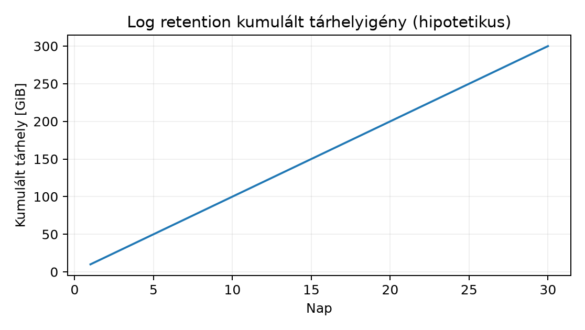

A d277-ben eljutottunk oda, hogy a GitOps pipeline immutable image-ekből, Helm vagy Kustomize overlay-ekkel szinkronizálja a desired state-et a clusterbe. A d278 célja, hogy ezt a clustert üzemeltethetővé tegyük: a szolgáltatás teljes adatútját (pod, client, edge, data) ellenőrizzük, a stateful tárolást és a visszaállítást rendszeresen teszteljük, a telemetriai stacket bekötjük, a workload identitást és secret-eket rotáljuk, a kapacitást és retentiont tervezzük, valamint a node-ok és a Kubernetes verzió karbantartását rutinszerűen végezzük.
A platform routine (platform rutin) olyan ismételhető, automatizált és ellenőrzött műveletsor, amely a cluster és a rajta futó szolgáltatások egészségét, biztonságát és helyreállíthatóságát garantálja. Ebbe tartoznak a smoke testek, a backup/restore gyakorlatok, a secret rotation, a capacity review és a node/verzió upgrade-ek.
A data path (adatút) a kliens kérésének útvonala a belépési ponttól (edge) a pod-ig, majd onnan a stateful adatig (például adatbázis vagy cache). A smoke test minimális, end-to-end szintű ellenőrzés, amely egy kritikus útvonalat – például egy health endpoint elérését – validál anélkül, hogy a teljes funkcionalitást tesztelné.
Ebben az alfejezetben az összes témát egy fiktív, de reális
lab-app szolgáltatáson keresztül mutatjuk be. A labor
környezet: lab-cluster nevű Kubernetes cluster,
lab-ns namespace, lab-app Deployment,
lab-app-svc Service, lab-app-gw Gateway (vagy
Ingress), lab-app-pvc PersistentVolumeClaim. A parancsokban
a tényleges erőforrásnevek dummy adatok; a futtatás előtti ellenőrzés
mindig a labor tulajdonosa által szükséges.
A külső kliens kérése a következő rétegeken halad keresztül:
lab-app.example.com nevet egy publikus vagy belső
DNS-szerverrel oldatja fel a Gateway vagy Ingress címére.Secret, vagy
külső cert-manager által kezelt, automatikusan megújított
tanúsítvány.lab-app-svc
Service-en keresztül továbbítja a forgalmat. A Service a pod-ok
virtuális IP-jét és portját definiálja; a tényleges routingot a
kube-proxy vagy a CNI plugin valósítja meg.A telemetria összehangolásának kulcsa, hogy minden rétegnél legyen mérhető jel: a Gateway naplózza a kérés időtartamát és státuszát, a Service rétegben a kube-proxy vagy CNI metrikákat szolgáltat, a podban az alkalmazás Prometheus-metrikákat és OpenTelemetry trace-eket bocsát ki, az adatbázis pedig saját metrikákat. Így egy hiba esetén a lánc mentén visszafelé haladva azonosítható a szűk keresztmetszet.
Kidolgozott ellenőrző parancssor (cél:
lab-cluster, context: lab-cluster-admin,
namespace: lab-ns):
# 1. DNS feloldás kívülről (a labor hoston)
dig +short lab-app.example.com
# Várt kimenet: a Gateway IP-címe vagy CNAME-je.
# 2. TLS tanúsítvány ellenőrzése
echo | openssl s_client -connect lab-app.example.com:443 -servername lab-app.example.com 2>/dev/null | openssl x509 -noout -dates -subject
# Várt kimenet: a tanúsítvány érvényességi ideje és a CN/SAN.
# 3. HTTP kérés a Gateway-en keresztül
curl -fsS -o /dev/null -w "%{http_code} %{time_total}s\n" https://lab-app.example.com/healthz
# Várt kimenet: 200 és egy alacsony latency, például 0.02s.
# 4. Belülről a Service ellenőrzése (ideiglenes pod)
kubectl --context lab-cluster-admin -n lab-ns run test --rm -it --image=busybox --restart=Never -- \
wget -qO- http://lab-app-svc.lab-ns.svc.cluster.local:8080/healthz
# Várt kimenet: "ok" vagy hasonló állapotüzenet.
# 5. NetworkPolicy állapota
kubectl --context lab-cluster-admin -n lab-ns get networkpolicy
# Várt kimenet: legalább egy engedélyező policy, például "allow-from-gateway".A lab-app állapotát egy PVC tárolja, amely a
lab-storage-class StorageClass-on keresztül dinamikusan
provisionált. Az access mode ReadWriteOnce (RWO), mivel
egyetlen pod írja. Ha több podnak kell olvasnia,
ReadWriteMany (RWX) szükséges, amihez általában hálózati
fájlrendszer (NFS, CephFS) szükséges.
A backup és a snapshot nem szinonimák. A snapshot a storage szintű, gyors, de nem helyettesíti a különálló backupot. A backup készülhet a PVC tartalmáról fájl szinten (például restic vagy borg), vagy a Kubernetes erőforrásairól és volume-jairól egy cluster-szintű eszközzel (például Velero). A backupnak rendszeresnek kell lennie, és a retention policy-t explicit módon definiálni kell.
A recovery csak akkor tekinthető működőnek, ha a restore-t teszteltük. Ezért a platform rutin része a havi (vagy gyakoribb) restore gyakorlat: egy elkülönített namespace-be visszaállítjuk a backupból a PVC-t és a Deploymentet, majd ellenőrizzük, hogy az alkalmazás elindul és az adatok konzisztensek.
Példa: PVC állapot és backup ellenőrzés
# PVC állapota
kubectl --context lab-cluster-admin -n lab-ns get pvc lab-app-pvc -o wide
# Várt kimenet: Bound állapot, a PV neve, a StorageClass, a capacity.
# Fájl szintű backup (restic példa, dummy repository)
# A pod-on belül, vagy egy sidecar segítségével:
restic -r s3:https://s3.lab.example.com/lab-app-backup snapshots
# Várt kimenet: legalább egy snapshot, a keletkezési idővel.
# Restore teszt egy külön namespace-ben:
kubectl --context lab-cluster-admin create namespace lab-restore-test
# Velero restore parancs (csak példa, a tényleges tool-tól függ):
velero restore create --from-backup lab-app-daily-20250101 --namespace-mappings lab-ns:lab-restore-test
# Ellenőrzés: a pod fut, és a /data könyvtárban a várt fájlok megvannak.A RPO (Recovery Point Objective) itt például 24 óra, ha napi backup van. A RTO (Recovery Time Objective) 1 óra, ha a restore gyors. Ezeket a d009-ben tárgyaltuk; itt a konkrét alkalmazásra kell lebontani.
A clusterben a telemetriai stack a következő komponensekből áll:
/metrics endpointot kell kitenniük, vagy egy
ServiceMonitor objektummal kell regisztrálni őket.A Prometheus metrikák például: -
up{job="lab-app"} – a cél elérhetősége. -
http_requests_total{job="lab-app", status="500"} – hiba
kérések. -
histogram_quantile(0.99, rate(http_request_duration_seconds_bucket[5m]))
– 99. percentilis latency.
Példa: Prometheus query a latency-ra
histogram_quantile(0.99, sum(rate(http_request_duration_seconds_bucket{service="lab-app"}[5m])) by (le))Ez a lekérdezés a lab-app szolgáltatás 5 perces ablakban
mért 99. percentilis válaszidejét adja. Ha ez meghaladja az SLO-t
(például 500 ms), riasztás indul.
A log pipeline ellenőrzése:
# A log gyűjtő podok állapota
kubectl --context lab-cluster-admin -n observability get pods -l app=fluent-bit
# Várt kimenet: minden pod Running.
# Teszt log generálása és keresése
kubectl --context lab-cluster-admin -n lab-ns exec deploy/lab-app -- logger -t lab-app "smoke test log entry"
# Majd a központi log felületen (pl. Grafana Loki) keresés a "smoke test log entry" kifejezésre.A pod-ok nem használnak beégetett credentialöket. Helyette
workload identity mechanizmust alkalmazunk: a pod egy
ServiceAccount-hoz kötődik, és a cloud provider vagy a cluster egy rövid
élettartamú tokent ad át (például AWS IRSA, GCP Workload Identity, vagy
Kubernetes ServiceAccount token). A lab-app
ServiceAccount-ja a lab-app-sa, amelyhez egy IAM-szerű
policy tartozik, és csak a szükséges erőforrásokhoz fér hozzá.
A secret rotation során a titkokat (adatbázis
jelszó, API kulcs, TLS tanúsítvány) rendszeresen cseréljük. A Kubernetes
Secret objektumok nem automatikusan rotálódnak; ezt külső
eszközzel kell megoldani: - External Secrets Operator
vagy Sealed Secrets a titkokat egy külső titokkezelőből
(Vault, AWS Secrets Manager) szinkronizálja. - A rotation policy például
30 napos TTL, és a pod-ok újraindításkor vagy dinamikusan kapják meg az
új titkot.
Példa: ServiceAccount és Secret ellenőrzés
# A ServiceAccount és a hozzá tartozó token
kubectl --context lab-cluster-admin -n lab-ns get sa lab-app-sa -o yaml
# Várt kimenet: a ServiceAccount létezik, és nincs benne felesleges secret.
# A Secret-ek listája
kubectl --context lab-cluster-admin -n lab-ns get secrets
# Várt kimenet: például lab-app-db-credentials, lab-app-tls.
# A Secret adatának ellenőrzése (csak a kulcs megléte, nem az érték)
kubectl --context lab-cluster-admin -n lab-ns get secret lab-app-db-credentials -o jsonpath='{.data}'
# Várt kimenet: a kulcsok megléte, az érték base64 kódolt.A rotation utáni ellenőrzés kritikus: a pod-nak képesnek kell lennie az új titokkal csatlakozni az adatbázishoz. Ezért a rotation része egy smoke test: a deployment rolling restart-ja után a pod readiness probe-ja sikeres, és az alkalmazás naplójában nincs autentikációs hiba.
A platform rutin része a kapacitás tervezése és a retention budget. A
lab-app erőforrásigénye:
A node pool kapacitása: például 3 worker node, egyenként 4 vCPU és 8 GiB RAM. A node-okra számítható a rendszerfenntartás (kubelet, kube-proxy, CNI, log gyűjtő) is, ami körülbelül 500m CPU és 1 GiB RAM per node. Így a futtatható workload kapacitás: kb. 33.5 vCPU és 37 GiB RAM. A HPA és a cluster autoscaler biztosítja, hogy a terhelés növekedésekor új pod-ok és node-ok jöjjenek létre.
A retention budget a telemetriai adatokra vonatkozik: - Log: 30 nap, becsült napi 10 GiB → 300 GiB tárhely. - Metrics: 90 nap, becsült napi 2 GiB → 180 GiB. - Trace: 7 nap, becsült napi 5 GiB → 35 GiB. - PVC adat: 10 GiB, napi snapshot 30 napig → 300 GiB.
Ezeket a számokat rendszeresen felül kell vizsgálni, mert a tényleges adatmennyiség eltérhet. A storage osztály költsége és a backup tároló költsége is a budget része.
Számpélda a log retentionhez (hipotetikus, lineáris növekedéssel):
| Nap | Napi log [GiB] | Kumulált [GiB] |
|---|---|---|
| 1 | 10 | 10 |
| 2 | 10 | 20 |
| 3 | 10 | 30 |
| 4 | 10 | 40 |
| 5 | 10 | 50 |
| 10 | 10 | 100 |
| 20 | 10 | 200 |
| 30 | 10 | 300 |
Az ábra ezt szemlélteti:

A Kubernetes cluster verzióját és a node-ok operációs rendszerét
rendszeresen frissíteni kell. A support matrix szerint a Kubernetes
általában az utolsó három minor verziót támogatja (például 1.29, 1.30,
1.31). A d278-ban nem adunk meg konkrét verziószámot, mert az a
generálás időpontjában ellenőrzést igényel. A labor cluster verzióját a
kubectl version mutatja.
A node drain célja, hogy egy node-ot karbantartás
előtt kiürítsünk: a pod-ok átkerülnek más node-okra, a node-ot
cordon-nal megjelöljük, hogy ne ütemezzenek rá új pod-ot,
majd drain-nel evakuáljuk a pod-okat. Ezután elvégezhető a
node OS frissítése vagy a Kubernetes kubelet frissítése, majd a node
visszakerül a clusterbe.
Node drain lépései (cél: lab-cluster,
node: lab-worker-1):
# 1. Cordon: megakadályozza az új pod-ok ütemezését
kubectl --context lab-cluster-admin cordon lab-worker-1
# 2. Drain: evakuálja a pod-okat, tiszteletben tartja a PDB-t
kubectl --context lab-cluster-admin drain lab-worker-1 --ignore-daemonsets --delete-emptydir-data
# 3. A node frissítése (OS csomagok, kubelet) - itt nem részletezzük, mert platformfüggő
# 4. Visszavétel
kubectl --context lab-cluster-admin uncordon lab-worker-1A drain során figyelni kell a PodDisruptionBudget-ra
(PDB): ha a lab-app Deployment PDB-je
minAvailable: 2, akkor a drain csak akkor folytatódhat, ha
legalább 2 pod folyamatosan elérhető. Ha a PDB sérülne, a drain
blokkolódik, és manuális beavatkozás szükséges.
Az upgrade terv magában foglalja: 1. A control plane frissítését (általában a cloud provider vagy a kubeadm végzi). 2. A worker node-ok egyenkénti drain-elését és frissítését. 3. A verziók compatibility ellenőrzését: a kubelet nem lehet újabb, mint a control plane, és a régi kubelet is csak egy bizonyos verzióskew-ig támogatott. 4. A frissítés utáni smoke testet.
A rollback Kubernetes esetén nehézkes: a kubelet visszaminősítése nem támogatott, ezért a node-ot újra kell építeni a régi verzióval. Ezért az upgrade előtt mindig készíteni kell egy ismert jó state snapshotot (például etcd backup).
Az alábbi példa egy napi rutint mutat be, amely a d278 összes témáját
lefedi. A futtatás feltételezi, hogy a lab-cluster
elérhető, a kubectl kontextus
lab-cluster-admin, a lab-ns namespace létezik,
és a lab-app Deployment fut.
Desired state: a lab-app elérhető
HTTPS-en, 3 replika fut, a PVC Bound, a backup friss, a metrikák
gyűjtése aktív, a secret friss.
Observed state gyűjtése és összehasonlítása:
# 1. Deployment replikák
kubectl --context lab-cluster-admin -n lab-ns get deployment lab-app -o jsonpath='{.status.readyReplicas}'
# Várt: 3
# 2. PVC állapot
kubectl --context lab-cluster-admin -n lab-ns get pvc lab-app-pvc -o jsonpath='{.status.phase}'
# Várt: Bound
# 3. End-to-end HTTPS kérés
curl -fsS -o /dev/null -w "%{http_code}\n" https://lab-app.example.com/healthz
# Várt: 200
# 4. Prometheus cél elérhetősége
# (A Prometheus API-n keresztül, például port-forward után)
curl -s 'http://localhost:9090/api/v1/targets?state=active' | jq '.data.activeTargets[] | select(.labels.job=="lab-app") | .health'
# Várt: "up"
# 5. Backup frissesség (restic példa)
restic -r s3:https://s3.lab.example.com/lab-app-backup snapshots --latest 1
# Várt: a legutóbbi snapshot kevesebb mint 24 órája készült.
# 6. Secret rotation ellenőrzés (a Secret creationTimestamp)
kubectl --context lab-cluster-admin -n lab-ns get secret lab-app-db-credentials -o jsonpath='{.metadata.creationTimestamp}'
# Várt: 30 napon belüli időbélyeg.Hibajelenség és diagnózis: ha a 3. lépésben a HTTP
kód 503, akkor a láncot visszafelé haladva ellenőrizzük: a Gateway podok
futnak-e, a Service endpointok léteznek-e, a podok ready-e, a
NetworkPolicy engedi-e a forgalmat. A kubectl describe és a
kubectl logs segít.
Hiba 1: NetworkPolicy blokkolja a Gateway-től érkező
forgalmat - Tünet: a külső kérés 503 vagy timeout, de a pod
közvetlenül elérhető a Service-en belül. - Hipotézis: a NetworkPolicy
nem engedélyezi a Gateway namespace-éből érkező ingress-t. -
Adatgyűjtés: kubectl -n lab-ns get networkpolicy -o yaml, a
Gateway podok naplója. - Egy változtatás: a policy ingress
szabályában hozzáadjuk a Gateway pod label-jét vagy namespace
selectorát. - Verification: a HTTPS kérés újra 200-at ad.
Hiba 2: PVC nem csatolódik a pod-hoz - Tünet: a pod
ContainerCreating státuszban ragad,
kubectl describe pod FailedMount eseményt
mutat. - Hipotézis: a StorageClass nem létezik, vagy a PV provisionálás
sikertelen. - Adatgyűjtés: kubectl get sc,
kubectl get pv, a storage provisioner logjai. - Egy
változtatás: a StorageClass paramétereinek javítása vagy egy meglévő PV
statikus csatolása. - Verification: a pod Running, a PVC Bound.
Hiba 3: A backup restore nem működik - Tünet: a restore parancs lefut, de a pod nem indul, vagy az adatok hiányoznak. - Hipotézis: a backup nem konzisztens, vagy a restore a rossz namespace-be történt. - Adatgyűjtés: a Velero vagy restic logok, a restore utáni pod logok. - Egy változtatás: az alkalmazás leállítása nélkül készült backup helyett konzisztens (quiesced) backup készítése, majd új restore. - Verification: a pod fut, az adatok ellenőrzése sikeres.
Hiba 4: Secret rotation után az alkalmazás nem tud csatlakozni az adatbázishoz - Tünet: a pod újraindul, de a readiness probe hibázik, a logban autentikációs hiba. - Hipotézis: az új secret nem lett frissítve a pod-ban, vagy a jelszó nem egyezik. - Adatgyűjtés: a Secret értékének összehasonlítása a külső titokkezelőben tárolttal (természetesen csak hash vagy jogosultsággal). - Egy változtatás: a Secret manuális frissítése, majd a Deployment rolling restart-ja. - Verification: a pod ready, a kapcsolat létrejön.
Készítsen egy táblázatot a lab-app szolgáltatás teljes
data path-járól a külső klienstől a stateful adatig. Minden rétegnél
adja meg: - a réteg nevét, - a belépő és kilépő protokollt/címet, -
legalább egy mérhető metrikát vagy log eseményt, - a lehetséges
hibajelenséget.
A táblázat legalább 6 sort tartalmazzon. Indokolja, hogy miért fontos a telemetriai pontok összehangolása.
Egy lab-restrictive namespace-ben fut egy
lab-internal Deployment. Készítsen egy NetworkPolicy-t,
amely: - engedi a saját namespace-éből a lab-internal podok
felé a 8080-as porton érkező forgalmat, - engedi a lab-ns
namespace-ből érkező forgalmat a 8080-as portra, - minden más ingress-t
blokkol.
Írjon egy shell parancssort, amely a policy alkalmazása után smoke
testet végez: egy ideiglenes podból a lab-ns namespace-ben
próbálja elérni a lab-internal szolgáltatást. Adja meg a
várt kimenetet és a postconditiont.
Egy lab-worker-2 node-on karbantartást kell végezni.
Hajtsa végre a node drain-t, majd szimuláljon egy adatvesztést a
lab-app PVC-n (például töröljön egy fájlt a pod-ban).
Végezze el a restore-t a legutóbbi backupból egy
lab-restore-test namespace-be, és ellenőrizze, hogy a
törölt fájl visszaállt. Írja le a parancsokat, a várt kimeneteket és a
postconditiont. Mi történik, ha a drain során a PDB sérül?
A táblázat (példa):
| Réteg | Belépő | Kilépő | Metrika/Log | Hibajelenség |
|---|---|---|---|---|
| DNS | Kliens → DNS szerver | IP cím | Lekérdezési idő, válaszkód | NXDOMAIN, timeout |
| Edge (Gateway) | HTTPS 443 | HTTP backend | Request latency, státusz kód | 502, 504 |
| Service | ClusterIP:8080 | Pod IP:8080 | Endpoint elérhetőség | Nincs endpoint |
| NetworkPolicy | Pod ingress | – | Eldobott csomagok (CNI log) | Timeout |
| Pod | HTTP | Alkalmazás logika | http_request_duration_seconds |
500, crash |
| PVC/DB | Fájlrendszer / SQL | Adat | Volume kapacitás, DB latency | Disk full, lock |
Indoklás: a telemetriai pontok összehangolása lehetővé teszi, hogy egy hibánál pontosan meg tudjuk mondani, melyik réteg hibásodott meg. Ha minden réteg mér, a lánc mentén visszafelé haladva a gyökér ok azonosítható, anélkül hogy minden réteget egyszerre vizsgálnánk.
A NetworkPolicy YAML (lab-restrictive namespace):
apiVersion: networking.k8s.io/v1
kind: NetworkPolicy
metadata:
name: lab-internal-policy
namespace: lab-restrictive
spec:
podSelector:
matchLabels:
app: lab-internal
policyTypes:
- Ingress
ingress:
- from:
- podSelector: {}
ports:
- protocol: TCP
port: 8080
- from:
- namespaceSelector:
matchLabels:
kubernetes.io/metadata.name: lab-ns
ports:
- protocol: TCP
port: 8080Alkalmazás és smoke test:
kubectl --context lab-cluster-admin -n lab-restrictive apply -f lab-internal-policy.yaml
# Smoke test a lab-ns namespace-ből:
kubectl --context lab-cluster-admin -n lab-ns run test --rm -it --image=busybox --restart=Never -- \
wget -qO- http://lab-internal-svc.lab-restrictive.svc.cluster.local:8080/healthzVárt kimenet: ok (a lab-ns namespace-ből
engedélyezett a forgalom). Ha a teszt pod a lab-restrictive
namespace-ben futna, akkor is működne a podSelector: {}
miatt. Egyéb namespace-ből a kérés timeout lenne.
Postcondition: a lab-internal-policy NetworkPolicy
létezik, a smoke test sikeres, a külső namespace-ből érkező forgalom
blokkolva van.
Node drain:
kubectl --context lab-cluster-admin cordon lab-worker-2
kubectl --context lab-cluster-admin drain lab-worker-2 --ignore-daemonsets --delete-emptydir-dataVárt kimenet: a node SchedulingDisabled állapotba kerül,
a podok evakuálódnak. Ha a lab-app Deployment PDB-je
minAvailable: 2, akkor a drain csak akkor folytatódik, ha
legalább 2 pod más node-on fut. Ha a PDB sérül, a drain blokkol, és a
következő üzenet jelenik meg:
error when evicting pods: Cannot evict pod as it would violate the pod's disruption budget.
Ilyenkor manuálisan kell növelni a replikákat vagy csökkenteni a PDB-t
(utóbbi nem javasolt).
Adatvesztés szimulálása:
# A pod nevének lekérése
POD=$(kubectl --context lab-cluster-admin -n lab-ns get pod -l app=lab-app -o jsonpath='{.items[0].metadata.name}')
# Fájl törlése (dummy fájl, nem éles adat)
kubectl --context lab-cluster-admin -n lab-ns exec $POD -- rm /data/dummy-file.txtBackup restore (Velero példa, a tényleges parancs a tool-tól függ):
velero restore create --from-backup lab-app-daily-latest --namespace-mappings lab-ns:lab-restore-testEllenőrzés:
kubectl --context lab-cluster-admin -n lab-restore-test get pod
# Várt: a lab-app pod Running.
kubectl --context lab-cluster-admin -n lab-restore-test exec deploy/lab-app -- ls /data/dummy-file.txt
# Várt: a fájl létezik.Postcondition: a lab-worker-2 node kiürítve, a
karbantartás elvégezhető; a lab-restore-test namespace-ben
a lab-app fut, és a törölt fájl visszaállt. A restore után
a teszt namespace-t takarítani kell.
A d278 a Kubernetes és GitOps platform üzemeltetési rutinját tanítja. A platform routine ismételhető, automatizált ellenőrzések sorozata, amely a szolgáltatás adatútját, tárolását, telemetriáját, identitását és kapacitását validálja. A data path a kliens kérésének útvonala a DNS-től a pod-ig és az adatig; minden rétegnél mérni kell. A smoke test minimális end-to-end ellenőrzés, amely a kritikus útvonalat validálja. A node drain és a backup restore rendszeres gyakorlása elengedhetetlen a valós helyreállíthatósághoz. A secret rotation és a resource budget biztosítja a biztonságot és a költséghatékonyságot. A feladatok a tervezést, a konfigurációt és a diagnosztikát gyakoroltatják.
Továbbhasznált definíciók: - Platform routine: ismételhető, automatizált műveletsor a cluster és szolgáltatások egészségének, biztonságának és helyreállíthatóságának fenntartására. - Data path: a kliens kérésének útvonala a belépési ponttól a pod-ig és a stateful adatig, minden réteggel és telemetriai ponttal. - Smoke test: minimális, end-to-end szintű ellenőrzés, amely egy kritikus útvonalat validál.
Az alábbi hivatkozások a fejezet kiindulópontjai, de a generálás során nem volt lehetőség az aktuális verziók és support matrix ellenőrzésére. A konkrét Kubernetes, Argo CD, Prometheus, OpenTelemetry és Velero verziók, API-k és támogatási időablakok a felhasználás előtt hivatalos dokumentációból ellenőrzendők. A példák fogalmi alapúak, nem feltétlenül tükrözik a legfrissebb stabil kiadást.
Ellenőrzési hiányok: A Kubernetes minor verzió support matrixa, a Velero és a Prometheus stack pontos verziója, a cloud provider workload identity implementációja, valamint a storage osztályok és backup eszközök konkrét paraméterei ellenőrzést igényelnek. A példákban szereplő számszerű kapacitás- és latency-adatok hipotetikusak, nem mérési eredmények.